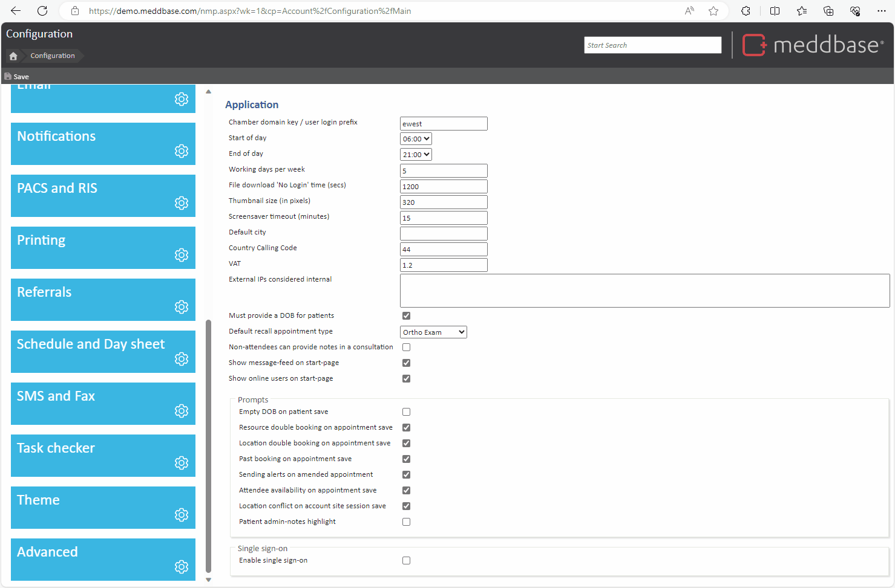
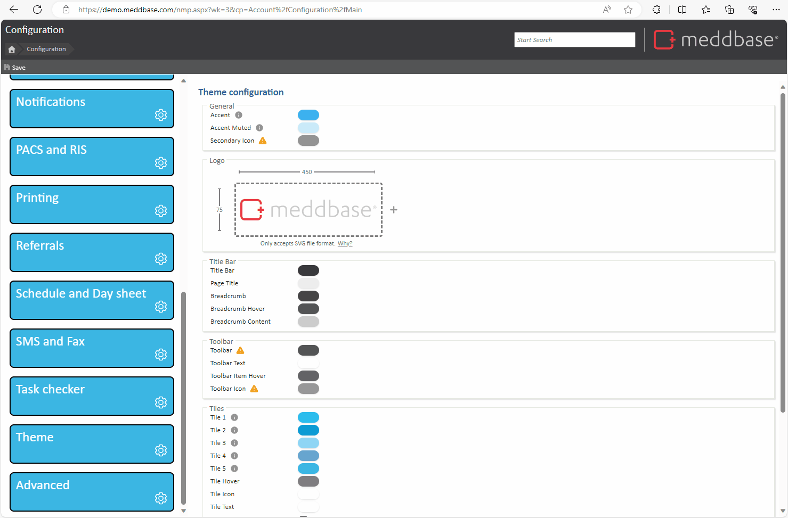
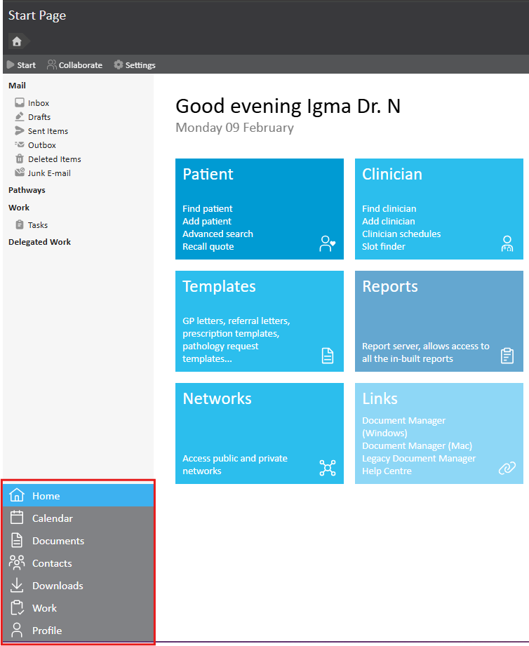
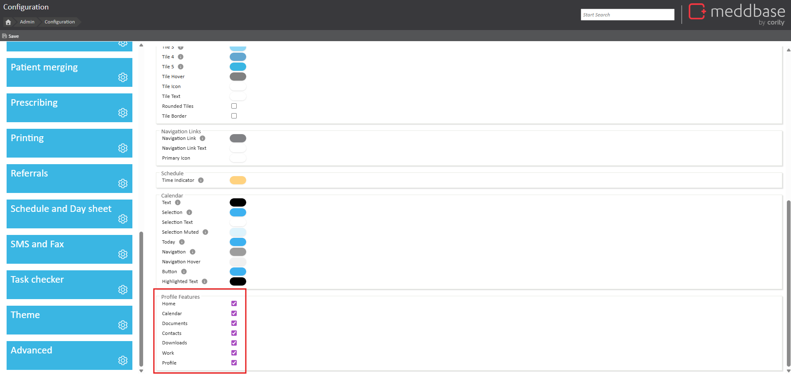

A Meddbase chamber can be customised in appearance through colour schemes (themes) and logos to align with specific branding or company colours. By default, the Meddbase logo appears in the top right-hand corner of all chambers but can be replaced with a client-specific logo. The quick links found on the bottom left of the Start page can also be configured to only include certain options. By default, all Meddbase quick links are enabled.
Colour schemes and logos are set at the chamber level and cannot be customised for individual users.
This article is designed to provide an overview of how to configure the colour scheme/theme of a chamber, how to change the logo, and how to choose which quick links appear on the Start page.
To modify the chamber theme:
Any changes made to the theme are logged in the Activity Log.

You can add or modify the logo in the top right corner of your Chamber. To modify the logo:
It is possible to add an animated logo if required, as long as it is in the SVG file format.
To reset the logo to the standard Meddbase logo, click the Reset button.

The quick links, located on the bottom left of the Start page, can be configured to only include certain options. By default, all Meddbase quick links are enabled.

To configure quick links:
